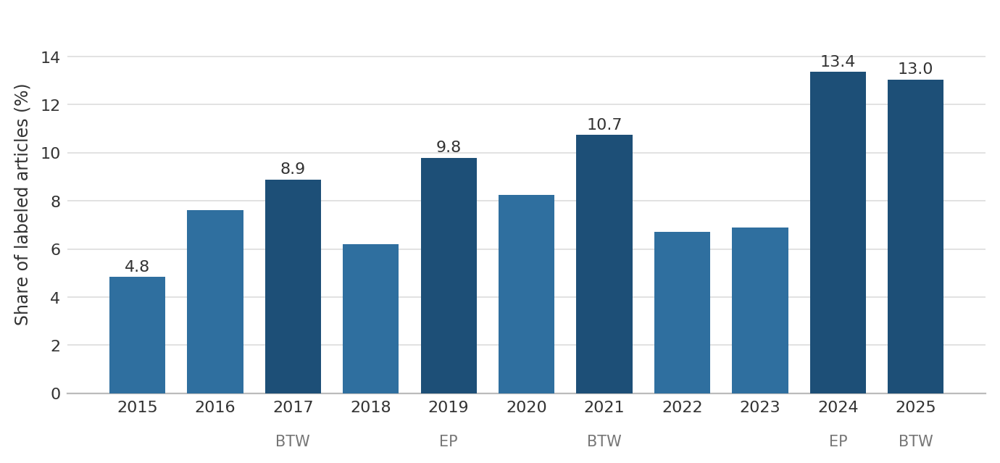
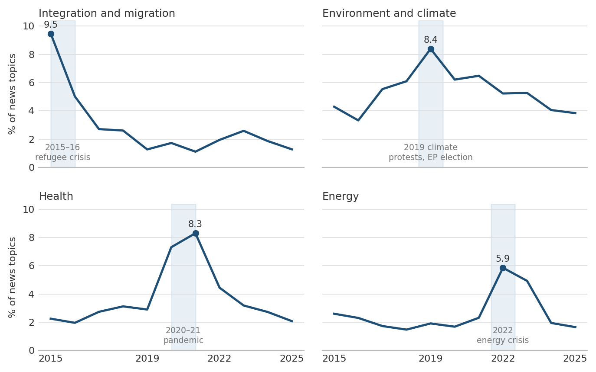
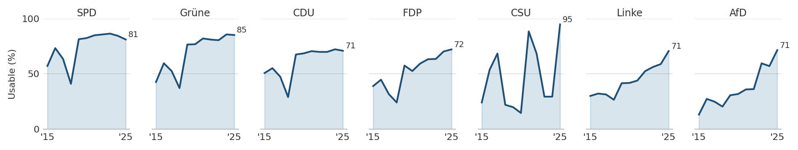

What do local party organizations do and say? This dataset measures the observable web presence of 2,611 local chapters (predominantly county-level Kreisverbände) of the seven main German parties (CDU, CSU, SPD, Grüne, Linke, AfD, FDP) in municipalities with at least 5,000 residents, annually from 2015 to 2025. Each year of each chapter's website is reconstructed from Internet Archive Wayback Machine snapshots, and structured measures are extracted: leadership boards and their composition, issue emphasis, digital and mobilization infrastructure, and a classified news layer. The public release ships chapter-year aggregates and coverage metadata only: no personal data, no reproduced website text.
What the data measure
- Organizational presence: whether a leadership board, officials, issue content, and a local office address are listed.
- Board composition: size, inferred gender shares, chair presence and gender, turnover, and professionalization proxies.
- Issue emphasis: about 25 issue-topic families (crosswalked to the Comparative Agendas Project), topic diversity, and per-family salience.
- Digital presence: chapter-specific Facebook, Instagram, X/Twitter, YouTube, Telegram, and TikTok accounts (national party accounts excluded).
- Mobilization infrastructure: donation, join, newsletter, program, events, and volunteer link flags (the Gibson–Ward party-website functions).
- News content: deduplicated article counts plus shares by policy topic, article function (press release, event, position statement, campaign, council work), and geographic focus (local / regional / national).


Coverage
Of 25,245 analysis-scope chapter-years, 16,866 (66.8%) are
researcher-usable; each panel row carries a coverage classification
(coverage_basis, bucket, tier) so the denominator is
reproducible. Roughly 28% of chapter-years have no same-year archived
snapshot, which is largely irreducible. Coverage rises over time and varies
by party, so analyses should condition on the coverage columns; the data
report discusses selection into observability at length.

Method and validation
The sampling frame is constructed top-down (2,394 party × Kreis cells from the official municipality register) before any website discovery, so coverage is measured against a fixed denominator. All content extraction and classification ran on a locally hosted open-weight language model with schema-constrained decoding; no scraped page content was sent to commercial cloud APIs. Every model-generated layer was validated by a human coder against source-page excerpts: 288 of 288 reviewed records across four stratified samples agreed with the extraction. Details, including known limitations (selection into observability, archival bias, survivorship), are in the data report.
Data and documentation
| File | Grain | Rows |
|---|---|---|
chapter_roster.csv | chapter | 2,611 |
chapter_year_panel.csv | chapter-year | 28,721 |
chapter_year_panel_enriched.csv | chapter-year | 28,721 |
chapter_year_topic.csv | chapter-year-family | 25,832 |
chapter_year_news.csv | chapter-year | 13,883 |
chapter_year_news_topic.csv | chapter-year-family | 85,238 |
chapter_year_provenance.csv | chapter-year | 28,721 |
topic_family_cap_crosswalk.csv | family | 26 |
The deposit bundle also contains the codebook, the data report, coverage and missingness diagnostics, validation summaries, and minimal R and Python load scripts. Person-level records and reproduced page text are withheld for data-protection reasons and available to researchers on request under a use agreement. Data and documentation are CC-BY-4.0; code is MIT.
ags /
kreis_id as strings (leading zeros); filter to
analysis_scope_included = 1 plus coverage_basis =
'full' (conservative) or any non-blank coverage_basis;
issue fields measure salience, not position.Citation
Hilbig, Hanno (2026). Local Party Websites in Germany: A Chapter-Year Panel, 2015-2025. Version 1.0.0. DOI pending Zenodo deposit.